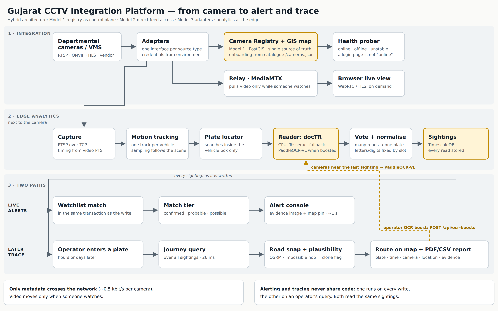
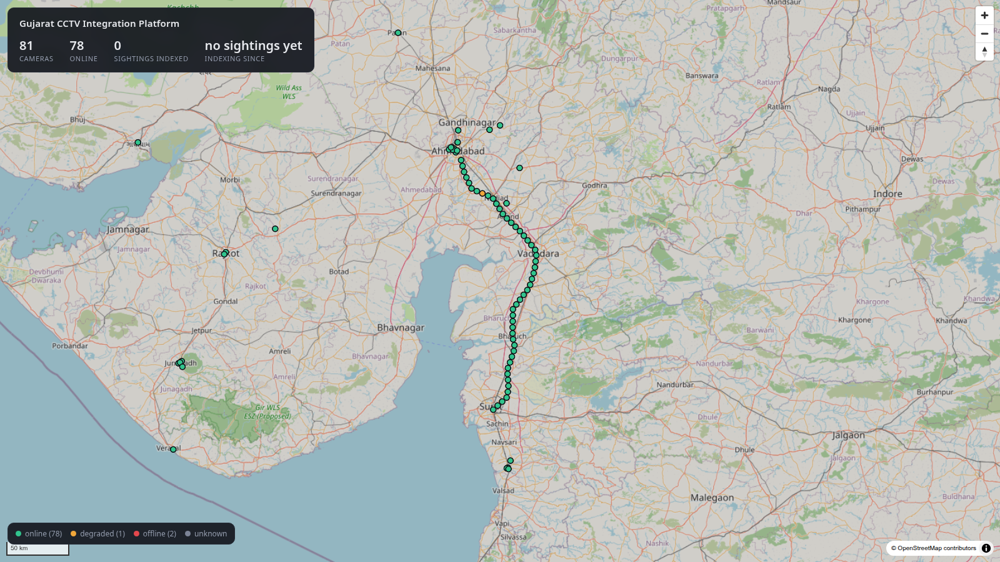
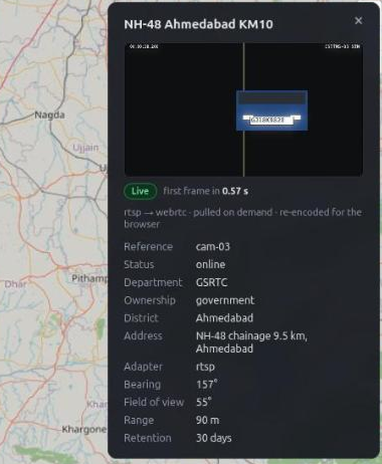
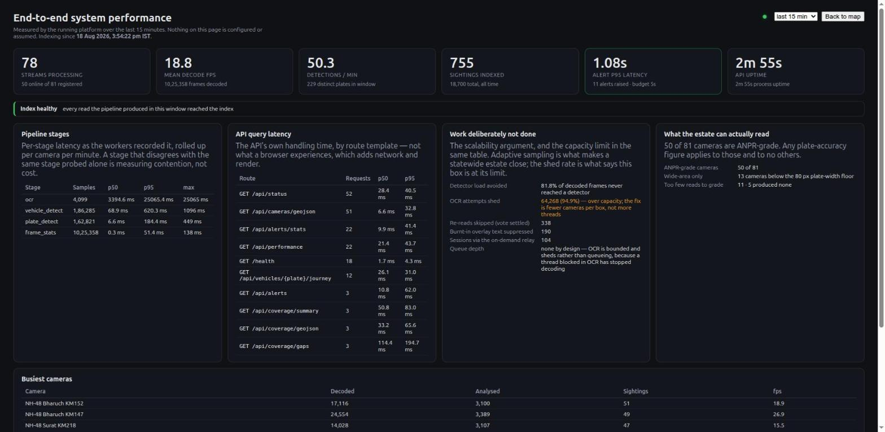

Gujarat Police Hackathon 2026
An edge-first federated architecture: Model 1 registry as control plane, Model 2 feed access, Model 3 adapter spine.
Working platform. Every figure in this deck is measured on the running system, or arithmetic from a measured figure with the calculation shown.
The constraint that shapes everything
By the time that number is handed over, the vehicle has already driven past the cameras. There is no opportunity to go and look for it.
The only thing that can answer is an index of every plate already read.
This moves the system's cost from the query path to the write path. Every sizing decision in this deck follows from it.
The distinction that matters: a watchlist alerter answers questions asked in advance. An index answers a question nobody had asked yet, which is exactly what the evaluation is.
Proposed model, with justification
We adopt Model 4's analytics outcomes through distributed edge inference rather than centralised video ingest.
| Model | Role in the hybrid | Demonstrated by |
|---|---|---|
| M1: Registry & GIS mandatory |
The control plane, not a side deliverable. Adapter choice, RBAC scope, health, coverage and route plausibility all resolve through it | 80 cameras onboarded (50 simulated, 30 government); GIS map; corridor gap analysis |
| M2: Unified viewing | The feed-access and operator layer. Direct RTSP/ONVIF is genuinely right for cameras with no VMS in front of them, which is most of them | Live view, searchable sightings, alert console |
| M3: Federation | The spine that makes M2 survive scale. A new vendor is a plugin, not a redesign | One interface; adding a source type changes no other file |
| M4: Analytics outcomes | Its goals adopted in full. Its centralised ingest rejected on cost and on the Core Goal | Journey reconstruction, watchlist correlation, real-time alerts |
The organising idea: move the analytics to the edge, move only metadata to the centre, move video only on demand.
Proposed model, with justification
| Central VMS | This platform | |
|---|---|---|
| Sustained backhaul | 240 Gbit/s | ~40 Mbit/s |
| Central storage, 15 days | ~26 PB | ~5 GB/day |
| Existing VMS, storage, AMC | Replaced | Preserved |
| On WAN outage | Blind | Edge keeps detecting |
0.5 kbit/s per camera is measured, not assumed, 104 sightings/minute across 71 contributing cameras, at ~300 bytes a row.
The brief asks for an approach that is cost-effective and uses existing infrastructure to the maximum practical extent. Model 4 discards 26 departments' investments and rebuilds them centrally.
Which explicitly reward strong edge-processing, bandwidth-optimisation, or low-connectivity operation. Central ingest is the opposite of all three.
We decline one implementation choice, not a capability. Every functional outcome Model 4 lists is present. The transport is what differs.
Solution overview and objectives
| Objective | What it means | State |
|---|---|---|
| Onboard | Any camera, any brand, any protocol, without redesign | 80 cameras. 5.1 s each, against a 30 s budget |
| Read | Continuously read plates from every camera and store all of them | 82.4% exact on ANPR-grade cameras · 104 sightings/min |
| Trace & alert | A plate returns a route across the state; a wanted vehicle raises an alert in real time | 26 ms trace · 1.04 s detection→alert |
Also built, and also graded
CSV and PDF carrying plate, confidence, camera, geolocation, timestamp and the crop that proves the read.
Which road segments no camera watches, the input to where the next cameras go.
Role- and department-scoped access, with an immutable record of every search and export.
Key innovations
| Innovation | The measurement behind it | |
|---|---|---|
| 1 | Edge-first metadata architecture, analytics beside the camera, ~250-byte events northbound | 0.5 kbit/s per camera against ~3 Mbit/s of video, four orders of magnitude |
| 2 | Registry as control plane, not inventory, adapters, RBAC, health, geography and route plausibility all resolve through it | The organisers' grid changed hostname mid-build. It cost one environment variable |
| 3 | Per-track confidence voting + derived confusable-character normalisation, the confusion table is generated, never typed in | Coercion is positional; a hand-written table cannot distinguish a considered omission from an oversight |
| 4 | Travel-time plausibility scoring, an impossible hop splits the journey instead of being dropped | Cloned-plate detection as a by-product of route reconstruction |
| 5 | Self-calibrating tamper detection, each camera judged against its own normal, not a global threshold | False positives 39 → 0 |
Innovations 3 and 4 share a principle: the anomaly is the signal. A system that quietly discards the outlier discards the crime.
High-level architecture
┌────────────────────────────────────────────────┐ │ L5 PRESENTATION GIS console · Alert desk · │ │ Journey explorer · Registry │ ├────────────────────────────────────────────────┤ │ L4 INTELLIGENCE Watchlist matcher · │ │ Journey · Re-ID · Reports │ ├────────────────────────────────────────────────┤ │ L3 PLATFORM CORE Event store · │ │ ★ CAMERA REGISTRY & GIS · │ │ RBAC · Audit · Stream broker │ ├────────────────────────────────────────────────┤ │ L2 FEDERATION Adapter framework · │ │ Credentials · Health prober │ ├────────────────────────────────────────────────┤ │ L1 EDGE ANALYTICS Decode · Sample · Detect · │ │ Track · OCR · Vote · Tamper │ ├────────────────────────────────────────────────┤ │ L0 SOURCES IP cams · Encoders · │ │ NVRs · Departmental VMS │ └────────────────────────────────────────────────┘ ★ mandatory Model 1, as the control plane
A relay starts when an operator opens a camera and is reaped 45 seconds after the last viewer. That cost is per viewer, not per camera, an unwatched camera costs nothing beyond its metadata.
One container image, identical in all three placements. Scaling is a replica count, not a redeployment.
End-to-end workflow
① registry already knows the camera, its position, and its adapter ② stream opened - timing from the video's own PTS, never from arrival ③ vehicle detected and tracked; plate located inside the vehicle box ④ OCR on each sampled crop → per-track vote → ONE plate string ⑤ sighting written - always, every vehicle, ~300 bytes └─ in the same transaction: matched against the watchlist, alert written if it hits. Both rows commit, or neither ⑥ operator sees the alert with its evidence bundle 1.04 s ⑦ later - a plate is typed, and its route across the state returns 26 ms
Steps ⑤ and ⑦ are the product. ⑤ is what makes ⑦ possible on evaluation day.
Every government feed burns a timestamp band and site label onto its own picture, at plate size and contrast. Whole-frame recognition reads the camera's own clock as a registration number, on every camera, forever.
A gateway replays its buffer on connect, so frames arrive faster than real time. Timed by arrival, every reconnect computes an impossible speed and reports a cloned plate.
End-to-end workflow, as built

Read the bottom band first. Live alerting runs on every write; the
retrospective trace runs on an operator's query. They read the same
sightings table and share no implementation, because the evaluation grades both
and building one does not deliver the other.
AI analytics approach
decode → sample → detect + track → locate plate → OCR → reject overlay text → per-track vote → normalise → persist
| Stage | Approach | Why it is that way |
|---|---|---|
| Sampling | Analysis rate follows scene activity | 80,000 × 15 fps = 1.2 M detections/s does not close. 81.3% of analysis avoided |
| Detect & track | Multi-object tracking, stable id per vehicle | Voting needs a track, not a frame |
| Plate localisation | Inside the vehicle box only | Removes the burnt-in-overlay error class entirely |
| Recognition | docTR on the CPU; PaddleOCR-VL on GPU for cameras an operator boosts | Night plates found 35% → 62% → 100% on the test clips |
| Voting | Whole-string and per-character, confidence-weighted | Per-frame emission duplicates records and discards many independent opinions |
| Normalisation | Positional, coerced by plate slot, at write and query time | A global O→0 merges different vehicles onto one key |
| Persistence | Unconditional, including format failures | A mis-read wanted vehicle is worse than a noisy record |
Beyond ANPR: vehicle class and appearance attributes · a vehicle id on every sighting, joined by plate or by a learned appearance vector (DINOv2-small), so an unreadable vehicle can still be followed · self-calibrating tamper detection · per-camera health analytics · on-demand OCR boost for the cameras around a location.
AI analytics: what the measurements said
| Condition | Exact | Within 2 chars |
|---|---|---|
| Daylight | 86.6% | 98.1% |
| Glare | 57.1% | 92.9% |
| Night | 58.6% | 75.9% |
| Overall, ANPR-grade | 82.4% | 95.1% |
Night is the weak spot, and it is on the slide rather than in a footnote. Measured with Tesseract; docTR, the default reader since 14 Sep, finds 62% of night plates against Tesseract's 35% on the same clips.
The finding that surprised us
| Tesseract on Indian plates | 83% exact |
| A general hub OCR model, same crops | 1.1% exact |
| Single-image GPU inference | 24.4 ms |
| The CPU path it was meant to beat | 17.0 ms |
| docTR on the CPU, night plates found | 62% vs 35% |
Light models by default, heavy models as a measured per-camera fallback. A camera the light path demonstrably cannot read escalates on its own evidence, one rung at a time, budgeted, and rolled back if it does not help.
The reader ladder, measured
| Reader | Night | Day |
|---|---|---|
| Tesseract | 34.7 | 84.1 |
| docTR PARSeq | 62.4 | 95.7 |
| PaddleOCR-VL | 100.0 | 100.0 |
Day hides the difference. Every reader is respectable in daylight, so a daylight-only benchmark would have justified the cheapest one and left the estate blind at night, which is when the vehicles we are asked about actually move.
Watchlist correlation methodology
Matching happens on the write path, not in a downstream consumer. The watchlist is held in process and refreshed on a 2-second timer, at 104 sightings a minute, a per-sighting query puts a network round trip on the pipeline's hot path.
| Tier | Condition | What it means to an operator |
|---|---|---|
| confirmed | Exact key and confidence ≥ 0.85 | Act on it |
| probable | Exact key at lower confidence, or edit distance 1 | Verify against the evidence crop first |
| possible | Edit distance 2 | A lead, corroborate before acting |
It misses the wanted vehicle whose plate came back one character wrong, 12.7% of reads. A system that misses one in eight is not working.
The operator is flooded and stops reading alerts, which is worse than not alerting at all.
The same string at 0.4 and at 0.95 is different evidence. The tier is how the operator is told which one they are looking at.
Real-time alerting
sighting
│
├─ tier confirmed │ probable │ possible
│
├─ priority severity − tier demotion
│
├─ dedup same plate, same camera, 120 s
│ ×3 for `possible` - a low-tier repeat
│ is far more likely a re-read than a
│ second event worth waking someone for
│
├─ alert row - SAME TRANSACTION as the sighting
│
├─ evidence crop · plate read · confidence ·
│ matched record · case ref · camera ·
│ district · lat/lon · measured latency
│
└─ states new → acknowledged → actioned
└────────────→ dismissed
The time-series store cannot enforce that foreign key, so the transaction enforces it structurally: an alert can never point at a sighting that does not exist.
dismissed and false_positive are statuses. An alert an
operator judged wrong is itself evidence, of the error rate, and of the decision
taken.
Key technologies, frameworks and tools
| Layer | Choice | Why this one |
|---|---|---|
| Store | TimescaleDB (PostgreSQL + PostGIS) | Registry, geospatial and time-series in one database, removes a distributed-consistency problem we do not need |
| Plate search | pg_trgm | Sufficient at this scale; a search cluster is the scale path, not the starting point |
| Vectors | pgvector | Vehicle appearance search (DINOv2-small, 384 numbers) inside the database already present |
| Media | MediaMTX | RTSP in, WebRTC/HLS out, the relay the brief already anticipates |
| Events | Redpanda | Kafka wire protocol, single binary, no ZooKeeper |
| Routing | OSRM + Gujarat OSM extract | Road-network snapping and travel-time plausibility |
| API | FastAPI + OpenAPI | Documented and browsable, integration-ready by construction |
| Map | MapLibre GL | GPU-rendered. Leaflet's DOM markers do not survive statewide density, and 80,000 points is the claim |
Justified deviations from the suggested stack: MapLibre over Leaflet, TimescaleDB + trigram over Elasticsearch, Redpanda over Kafka. Each is stated with its reason, because unexplained deviation is penalised and justified deviation is not.
Scalability at 80,000 cameras
50 to 57 cameras per 20-core box. At 57 cameras, recognition p50 was 624 ms with a healthy 6.1% shed. At 76 cameras the same box shed 94.7% and p50 rose to 3.4 s.
| Quantity | Arithmetic | Result |
|---|---|---|
| Nodes for 80,000 cameras | 80,000 ÷ 50 | 1,600 |
| Per district | 1,600 ÷ 33 | ~48 |
| Sightings/day | 80,000 × 1.5/min × 1,440 | ~173 M |
| Compressed rows/day | 173 M × 300 B ÷ 10 | ~5 GB |
| Metadata backhaul | 80,000 × 0.5 kbit/s | ~40 Mbit/s |
Workers claim a shard with a database advisory lock, no orchestrator, no leader election, no per-replica configuration, and a crashed worker returns its shard the instant its connection drops.
Plausibly 3 to 5x per node, taking 1,600 toward ~400. It is an architecture change, not a flag, so it is named, not claimed.
Interoperability, security, deployment
Interoperability
No proprietary interface between our own layers.
Security: built
Security: design
Named, not implied. A proposal that blurs built and specified cannot be trusted on either.
Privacy under the DPDP Act 2023. Metadata-by-default is the primary control: the platform's default state is that no personal video has moved anywhere. Facial recognition ships disabled, requires per-query case binding and audit to enable, and is demonstrated only on synthetic faces.
Expected operational benefits and impact on policing
| Today | With this platform | |
|---|---|---|
| Time to locate a suspect vehicle | Camera-by-camera manual review, department by department, over hours | A plate query returns a timestamped route, 26 ms p50, 31 ms p95 |
| Cross-department visibility | A Home Department investigator sees nothing from RTO or Food & Civil Supplies cameras | The registry makes coverage discoverable, you can learn a camera exists before negotiating access to it |
| Posture | Reactive: footage is reviewed after the incident | Proactive, a hit surfaces while the vehicle is still moving. 1.04 s |
| Manpower | Operators watch video walls | Operators triage prioritised alerts that carry their own evidence bundle |
| Infrastructure planning | Where the next camera goes is a judgement call | Gap analysis over the road network. Measured on NH-48: 1.27% of 237 km covered, 51 gaps, largest 4.76 km |
The structural impact: the State gains a searchable index of vehicle movement that already contains the answer to a question nobody has asked yet. And a cost impact: ~26 PB and 240 Gbit/s of central infrastructure is not purchased, and 26 departments' existing investments keep running.
Not a mock-up


Measured end-to-end performance
| Budget | Measured | Headroom | |
|---|---|---|---|
| Vehicle trace across the state | 2 s | 26 ms p50 · 31 ms p95 | 77× |
| Detection → alert | 5 s | 1.04 s | 4.8× |
| Camera onboarding | 30 s | 5.1 s | 5.9× |
| Click → live video, cold camera | n/a | 0.23 s | n/a |
| Concurrent streams held | 50 | 50 for 15 min, 0 restarts | n/a |
| Throughput | n/a | 104 sightings/min across 71 cameras | n/a |
| Plate accuracy, ANPR-grade | n/a | 82.4% exact · 95.1% within 2 | n/a |
869 automated tests. Every figure traces to a dated entry recording the method that produced it, which is what makes it checkable rather than asserted.
The platform measures itself

The third panel is the one to read. It reports work deliberately not done: 94.9% of OCR attempts shed at 76 cameras on a 20-core box. That is the capacity limit stated as a measurement, and it is why the honest sizing figure is 50 to 57 cameras per box rather than 76.
Common evaluation areas
| Criterion | Evidence in this submission | |
|---|---|---|
| 1 | Successful test case Onboarding and operation on the government feed |
81 cameras onboarded by catalogue reconciliation, 30 of them government. Live view and recorded playback both demonstrated; ANPR output written to the index. |
| 2 | Solution presentation Problem understanding, model, justification |
This deck. Element 1 states the model and why Model 4 was rejected with the arithmetic; slide 2 states the constraint the whole design follows from. |
| 3 | Solution architecture Soundness, feasibility, security, interoperability |
Six-layer HLD, the workflow diagram on slide 9, and the interoperability and security slide. Full design in the submitted HLD document. |
| 4 | Working platform and demonstration | Slides 19 and 21 are screens from the running platform. Demonstrated on both our own simulated estate and the government feed. |
| 5 | Video analytics output ANPR, detection, timestamps, reports |
ANPR with per-condition accuracy, vehicle detection and tracking, tamper detection, appearance attributes, and CSV and PDF detection reports carrying the evidence crop. |
| 6 | Scalability and PoC readiness Toward 80,000 cameras |
Measured capacity per box, sharding by advisory lock with no orchestrator, and the shed rate published rather than hidden. Slides 16 and 21. |
| 7 | Submission completeness | Deck, HLD, workflow diagram, demonstration video, public repository, live instance with a viewer account, and API documentation. |
Nothing in this column is aspirational. Where a capability is designed rather than built, it is labelled as such on slide 17, and the limits we know about are stated on the final slide rather than left for an evaluator to find.
Bonus considerations
Registry as control plane, direct feed access for analytics, adapters for everything that does not fit. The registry is mandatory; the other two are how it earns its keep.
Road-snapped through OSRM, with per-hop plausibility. An impossible hop splits the journey and flags a probable cloned plate rather than being discarded.
Vehicle detection and tracking, camera tamper detection, appearance attributes for feeds that cannot resolve a plate, and face detection as a disabled plugin proving the pipeline takes modules.
Analytics run beside the camera and only metadata crosses the link. Video is pulled on demand and released 45 s after the last viewer, so cost is per viewer, not per camera.
Every view, search, trace and export is recorded in an append-only log. Two roles, and the evaluation account is read-only by API enforcement. One 8 kB evidence crop per sighting; no recorded video.
GIS console, alert desk, journey explorer and a live performance page. Every capability is an OpenAPI-documented endpoint, with GeoJSON for anything geographic.
What we do not claim
Saying this first is worth more than being asked. It is also what makes every other number in this deck credible.